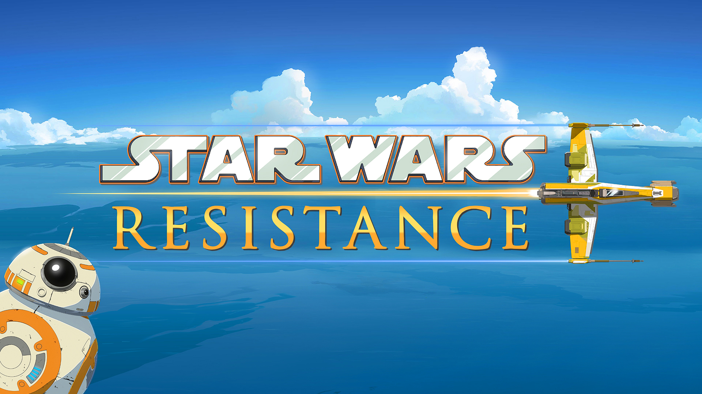

Sorozatok
Droids and Ewoks (1985–1987)
Kedvcsináló: Az első trilógia után George Lucas úgy döntött minisorozatokba kezd, így született meg a” Droids” és az „Ewoks” című animációs sorozat. Míg a „Droids” R2-D2 & C-3PO történeteit meséli el, az Új remény eseményei elött, addig az „Ewoks” az ewok faj bemutatásáról szól és a Jedi visszatér cselekménye után zajlóik.
Klónok háborúja (2003–2005)
Kedvcsináló:Ez egy animációs sorozat, amely „A klónok támadása” és a „A Sith-ek bosszúja” között zajlóik. A cselekmény, nevéből adódóan A Klónokról szól, ám többek közt bemutatja a szeparatisták és a köztársaságiak harcát, Grievous tábornok Jedi kaszabolását és még több erőhasználót is. 3 évad készült belőle, folytatását A klónok háborúja 3D-és animációs sorozat váltotta fel.

A klónok háborúja (2008–2020)
Kedvcsináló:A valaha volt egyik legjobb Star Wars sorozat. gyerekműsorként indult és a 7. évad végére komoly történetté növi ki magát. „A klónok támadása” és a „A Sith-ek bosszúja” filmek között, szinte minden megtudhatunk A Jedirendről, fejvadászokról, droidokról, Sithekről és még sok más fajról, a köztársasági korszakból. Mindenképpen ajánlom Star Wars fanoknak.
Lázadók (2014–2018)
Kedvcsináló:Miután George Lucas eladta a Star Wars filmek jogait, elkészült az első sorozat, amit már a Disney csinált. A történet 5 évvel az „Egy új remény” előtt játszódik és egy csapat lázadóról szól, akik mindenféle küldetésekre mennek, hogy fellázadjanak a Birodalom ellen, és megpróbáljak legyőzni azt. A cselekményeket négy évadon át követhetjük és csodálhatjuk, ahogy a főszereplő tolvajfiúból Ezra Bridgerből, Erős Jedilovag lesz.
Ellenállás (2018–2020)
Kedvcsináló:A sorozat hat hónappal Az ébredő Erő előtt játszódik. Kazuda Xiono egy fiatal és tehetséges pilótát, Poe Dameron egy titkos küldetéssel bízza meg, hogy kémkedjen az Első Rend ellen. 2 évad készült a sorozatról. Több híresebb szereplő is felbukkan, mint például: Phasma százados, Leia Organa, Kylo Ren, vagy akár Hux tábornok is.
The Mandalorian (2019–)
Kedvcsináló:A „The Mandalorian” az első élőszereplős tv sorozat a Star Wars világában, ami A birodalom bukása után pár évvel játszódik. A főszereplő egy mandalori harcos, aki fejvadászként él. Egyik munkája során rá talál egy gyermekre, aki sokkal nagyobb jelentőséggel bír, mint ahogyan azt ő elsőnek gondolná. A későbbiekben szoros kötödés lesz kettőjük között.